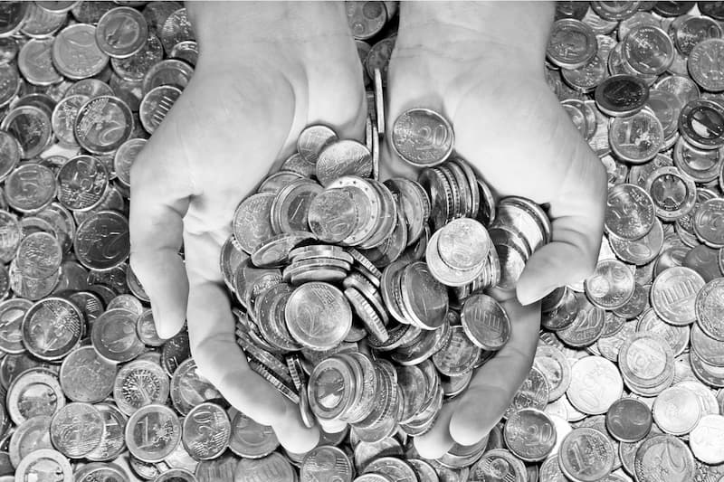
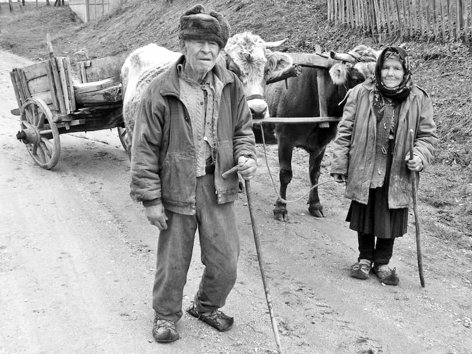

Criza financiară și economică globală a accentuat o serie de dezechilibre existente în toate statele membre ale Uniunii Europene (inclusiv în țările din zona euro), în special dezechilibrele fiscal-bugetare. Recent, tensiunile acumulate în zona euro par a fi „explodat” sub forma deficitelor fiscal-bugetare, nominalizată fiind, în special, Grecia – țara care a devenit extrem de brusc „oaia neagra”, imprudentă, leneșă și lacomă – ce amenință, prin comportamentul ei cheltuitor, însăși stabilitatea zonei euro. Dacă ar fi să fim pe deplin sinceri, încă din 2001, de la intrarea ei în „clubul select” al țărilor zonei euro, Greciei i s-au „tolerat” multe abateri de la îndeplinirea criteriilor de convergență de la Maastricht, criterii, de altfel, obligatorii pentru integrarea oricărei țări în această zonă. Totuși, rațiuni de ordin politic1, au „împins-o”, atât pe ea cât și pe alte state2, în „paradisul” numit Uniunea Economică și Monetară (UEM). Astfel, Grecia a depășit în mod constant nivelul de referință prevăzut în Tratatul de la Maastricht (și înainte și după adoptarea euro) atât în privința deficitului bugetar, cât și al datoriei publice, înregistrându-se creșteri mai accentuate ale acesteia din urmă, mai ales după anul 2007. Astfel, în 2009 Grecia avea o datorie publică de 270 miliarde euro, respectiv de 112,6% din PIB3, nivel devenit alarmant în condițiile în care investitorii tratează din ce în ce mai diferențiat datoriile țărilor din zona euro, atașând țărilor mai îndatorate o primă de risc pe măsură4. Totodată, referitor la Grecia – unde de șoc de la nivel european s-a datorat faptului că guvernul elen a anunțat creșterea deficitului bugetar la 12,7% pentru anul 2009, de peste trei ori mai mult decât indicau estimările oficiale, autoritățile de la Bruxelles considerând că Grecia nu a raportat corect anumite operațiuni din componența acestui indicator. În aceste condiții, această țară s-a văzut nevoită să ofere randamente la titlurile de stat cu aproape patru puncte procentuale mai ridicate decât titlurile guvernamentale germane pentru a-și putea menține și atrage investitorii. Costul datoriei statului grec a ajuns la cel mai ridicat nivel de la introducerea euro din cauza situației dificile, dar și a incertitudinilor care învăluie finanțele publice ale statului elen. În 2001, imediat după ce Grecia fusese admisă în Uniunea Monetară Europeană, Goldman Sachs a ajutat discret guvernul elen să împrumute sume considerabile pentru ca această țară să respecte normele europene în ceea ce privește deficitul, continuând să cheltuiască mai mult decât și-ar fi permis în mod real. Acordurile încheiate în ultimul deceniu de băncile nord-americane ridică numeroase întrebări cu privire la rolul jucat de acestea în această criză financiară mondială. Caracterul secret și dubios al acordurilor ce au condus la amplificarea crizei financiare din Grecia, subminând puternic moneda europeană, este extrem de asemănător cu cel care a generat criza ipotecilor sub-prime din SUA. În acest sens, un rol important l-au jucat instrumentele financiare derivate, care au condus la creșterea datoriilor Greciei, exact așa cum s-a întâmplat în criza sub-prime din America dar și în cazul prăbușirii American International Group (AIG), fundamentul „afacerii” fiind acordarea unor drepturi guvernamentale viitoare ale statelor naționale în schimbul unor împrumuturi rapide de fonduri. Practic, Grecia a oferit „creditorilor” o serie de drepturi bănești pe care nu le deținea în acel moment – drepturi din taxele percepute pe aeroporturi și impozite asupra veniturilor obținute din jocuri de noroc - încadrând aceste operațiuni, din punct de vedere financiar, la capitolul de vânzări și nu la împrumuturi.

Încă din 2000, miniștrii europeni de finanțe au dezbătut dacă tranzacțiile cu derivate folosite „creativ” să fie făcute publice, iar în 2002 a fost cerută dezvăluirea afacerilor care nu apăreau în bilanțuri, obligând guvernele țărilor UE să le considere drept împrumuturi, și nu vânzări. Din cauză că tranzacțiile sale fuseseră executate înainte de modificarea acestei reguli (adică înainte de 2002), Grecia nu a considerat necesar să corecteze situația acestor raportări „eronate”. Este firesc să se considere că astfel de înțelegeri duc pe o pistă greșită investitorii și autoritățile de reglementare în privința datoriilor unei țări, și că acordurile cu pricina, chiar daca au fost legale, au contribuit la escaladarea instabilității, creând impresia unui fals echilibru economic, însă problema pusă este judecarea nepărtinitoare asupra problemei. Astfel, ar trebui să se analizeze dacă doar Grecia a procedat în această manieră și ce i se reproșează de fapt Greciei, dacă la momentul încheierii tranzacțiilor acestea erau în limita legală??? O a treia întrebare ar fi dacă acum se mai poate redresa situația. Referitor la prima întrebare răspunsul este nu! – adică, deși a stârnit numeroase controverse, acest tip de afaceri a fost utilizat, în decursul timpului, de mai multe țări și probabil, că și azi, nu numai Grecia, ar trebui să „beneficieze” de muștruluiala forurilor UE. De exemplu, Franța și Italia, pentru a‑și reduce deficitele bugetare, au apelat în trecut la măsuri tranzitorii (exemplu: Italia a introdus un impozit numit „european” iar Franța a preluat de la France Telecom suma de 37,5 miliarde de franci), operațiuni ce pot fi lesne considerate asemănătoare cu cele efectuate în ultimii ani de Grecia. Răspunsul la a doua întrebare este mai dificil, în sensul că, probabil, ce i se poate reproșa acum Greciei este că, de la momentul vizibilității efectelor nefastelor tranzacții, nu și-a corectat raportările, însă și acest aspect pare cusut cu „ață albă”! Este greu de crezut că UE nu a știut de acest tip de afaceri și încă și mai greu de crezut că nu a fost capabilă să atenționeze Grecia să-și corecteze raportările și mai ales să o facă să intervină la timp pentru reducerea deficitelor și a datorie publice în creștere. De fapt, dacă vedem că, până și atunci când criza se apropia de apogeu, la sfârșitul anului 2009, băncile străine căutau modalități „de a ajuta” Grecia să-și ascundă datoriile prin utilizarea unor instrumente de finanțare care ar fi putut împinge datoriile din sistemul elen de sănătate în viitorul îndepărtat5, putem deduce existența unui aranjament financiar de proporții, ce depășește cu mult presupusa „bună-credință” a acestor instituții financiare. Mai mult, putem bănui că există o înțelegere tacită între băncile nord-americane și forurile UE, în care primele oferă „momeala” unor împrumuturi facile, iar ultimele sunt „impulsionate” să sancționeze financiar țara incriminată și/sau să o împingă la o excludere din rândul statelor membre UEM. În final, răspunsul la cea de-a treia întrebare - dacă acum se mai poate redresa situația Greciei, putem spune că deja responsabili europeni, în frunte cu Comisia Europeană, au decis să lucreze împreună cu autoritățile elene pentru aplicarea unor măsuri concrete de reducere a deficitului bugetar, iar autoritățile elene și-au asumat angajamente precise și trebuie să raporteze periodic progresele obținute. Din cauză că riscurile legate de evoluțiile macroeconomice și ale piețelor sunt reale, Grecia a acceptat totodată să prezinte măsuri economice suplimentare pentru reducerea deficitului bugetar în 2010. De asemenea, Grecia a anunțat că ia în calcul un apel la Fondul Monetar Internațional (FMI), dacă UE nu îi va oferi asistența financiară de care are nevoie, soluție însă neagreată de către președintele Băncii Centrale Europene. În acest sens, Banca Centrală Europeană dar și celelalte foruri decizionale ale UE, consideră că ar fi destul de „rușinos” ca țările din zona euro să apeleze la FMI, totuși se pare că nu aceeași viziune a avut-o în legătură cu recentele noi state membre intrate în Uniunea Europeană (inclusiv, România!), față de care nu a avut nici un fel de sentiment de „apartenență” …nici măcar regională! De remarcat că, direct sau indirect, acest tip de abordare diferențiată subliniază nu numai caracterul „elitist” și „restrictiv” al zonei euro, cât și faptul că apelarea la un organism american, cum este FMI, pune în discuție „beneficiul” unui astfel de acord pentru țara aflată în postura de debitor față de o asemenea instituție. Doar în contextul dificultăților înregistrate de țările membre ale zonei euro, BCE a insistat recent pe necesitatea creării unui Fond Monetar European (FME), adică a unui corespondent european al FMI.

Vehicularea ideii că Grecia ar trebui să fie susținută de țările puternice din UEM, adică mai exact de Franța și Germania, este și ea destul de controversată. În acest sens, deși un ajutor explicit este deocamdată refuzat de instituțiile UE, pe de o parte, nu există teoretic posibilitatea unui faliment de țară, deoarece autoritățile europene nu-și pot permite să asiste neputincioase la o asemenea undă de șoc, Grecia fiind prea importantă economic pentru a putea să intre în colaps fără consecințe grave pentru stabilitatea zonei euro, iar pe de altă parte BCE nu poate asista impasibilă la deprecierea cursului monedei euro, pe fondul temerilor investitorilor privind capacitatea Greciei de a-și refinanța datoriile, temeri care au afectat oricum cursul euro în ultimul timp. Prin urmare, deși clauza „no bail out” din Tratatul Maastricht, legată de datoria națională6 exclude posibilitatea de ajutorare a Greciei sau a oricărui stat aflat în situația unei îndatorări excesive, totuși organismele instituționale europene sunt, direct sau indirect, obligate să găsească soluții. Astfel, deși BCE nu dispune de nici un instrument formal pentru a veni în ajutorul unei țări strâmtorate, totuși, în cursul recentei crize financiare globale, banca a demonstrat că poate da dovadă de creativitate în a găsi modalități de sprijinire a sistemului bancar european, extinzând masiv volumul împrumuturilor acordate băncilor centrale, ajutându-le astfel să evite o criză și mai gravă a creditului. Totodată, politica BCE permite acceptarea obligațiunilor guvernamentale drept colaterale pentru operațiunile de creditare în funcție de evaluarea agențiilor de rating. În actuala situație, BCE ajută Grecia acceptând obligațiuni grecești drept garanții colaterale pe care băncile din Grecia le pot folosi pentru a lua bani cu împrumut. Atât timp cât Grecia își menține actualele ratinguri de creditare, obligațiunile se înscriu în regulile BCE. Dacă însă situația se va înrăutăți, guvernele europene vor fi cele care vor trebui să găsească o modalitate de a ajuta Grecia sau alte țări aflate în dificultate (Italia, Portugalia etc). Deși se abțin de la orice gest care ar încuraja împrumuturi și cheltuieli guvernamentale excesive, statele UE au dat de înțeles că vor face tot posibilul pentru a preveni intrarea unui stat euro în incapacitate de plată. În acest sens, Germania, printr-o serie de membrii ai parlamentului german, și-a exprimat susținerea financiară contra… atenție… vânzării unor insule! Prin urmare, în viziunea unor demnitari nemți… vânzarea unor insule ar putea „ajuta” Grecia să iasă din actuala criză a datoriilor bugetare. Surprinzător este că deși propunerea poate fi considerată scandaloasă, totuși nimeni nu pare cu adevărat deranjat de încercarea unor foste puteri imperiale de a-și relua dominația în sudul continentului european… Insule precum Corfu sau vestigii antice precum Acropolele și Parthenonul nu au o valoare „reală” și „corectă” decât pentru greci sau ortodocși, căci ele conțin pe lângă patrimoniul istoric și o valoare spirituală incontestabilă7. Astfel, deși fără aparentă legătură cu subiectul „jertfă și mântuire în lumea contemporană”, ne punem problema dacă nu cumva se încearcă o rupere a unor țări, consider nu întâmplător creștin ortodoxe (precum este Grecia!), de destinul lor istoric, printr-o înrobire financiară fără precedent!!! În acest sens, o mare atenție ar trebui să aibă și România, care pare a fi „târâtă” alături de țările din regiune, asemeni Greciei și altor state mediteraneene, în tot felul de acorduri cu instituții internaționale „binevoitoare” care în final i-ar putea cere și ei renunțarea la o parte a integrității ei teritoriale așa cum se încearcă acum cu Grecia!
Note
1 Rațiunile celorlalte state deja membre ale Uniunii Economice și Monetare nu par a fi, nici azi, incriminate pentru intrarea „nemeritorie” a unor state în această zonă. Instituțiile europene plasând, aproape exclusiv, vina asupra comportamentului „exaltat” al țărilor candidate, care, în dorința extragerii maximului de beneficii promise, au falsificat aproape în întregime toate „calitățile” lor fiscal-bugetare sau monetare.
2 Spre exemplu pe țări precum Belgia și Italia, care erau extrem de departe în privința îndeplinirii criteriului legat de dimensiunea datoriei publice în PIB, au fost acceptate în UEM tot din considerente pur politice.
3 Date AMECO
4 Ceea ce face orice îndatorare ulterioară a acestor țări mult mai scumpă, intrându-se într-un cerc vicios al îndatorării.
5 Într-un mod asemănător realizării celei de-a doua ipoteci, precum s-a întâmplat în cazul proprietarilor de pe piața ipotecară aflați în dificultate.
6 Conform clauzei „no bail out”, ce se traduce prin accesul relativ ușor la împrumuturi sau la ajutor financiar guvernamental din partea UEM, se interzice Băncii Centrale Europene să sprijine o țară care se confruntă cu dificultăți de natură fiscală, printr-o ajustare a politicii monetare. O asemenea măsură este menită să elimine posibilitatea apariției unei crize de lichiditate în întreaga UEM, printr-o „injecție” de monedă, atunci când o țară devine insolvabilă.
7 În insula Corfu se află pe lângă moaștele altor sfinți și moaștele Sfântului Spiridon, care în anul 325 a participat la Primul Sinod Ecumenic de la Niceea, unde a uimit pe mulți cu simplitatea cu care a explicat credința ortodoxă. Fără prea multă carte, sfântul a reușit să uimească pe toți cei prezenți la Sinodul de la Niceea, explicând unitatea și diversitatea Sfintei Treimi ținând în mână o cărămidă și spunând că este formată, asemeni cărămizii, din trei elemente esențiale, și anume foc, pământ și apă. În timp ce vorbea, s-a aprins focul în partea de sus a cărămizii iar din partea de jos, a început să curgă apa. Totodată, Sfântul Spiridon este slăvit de locuitorii insulei Corfu pentru salvarea acesteia de invazia turcă din 1716.
Comentarii